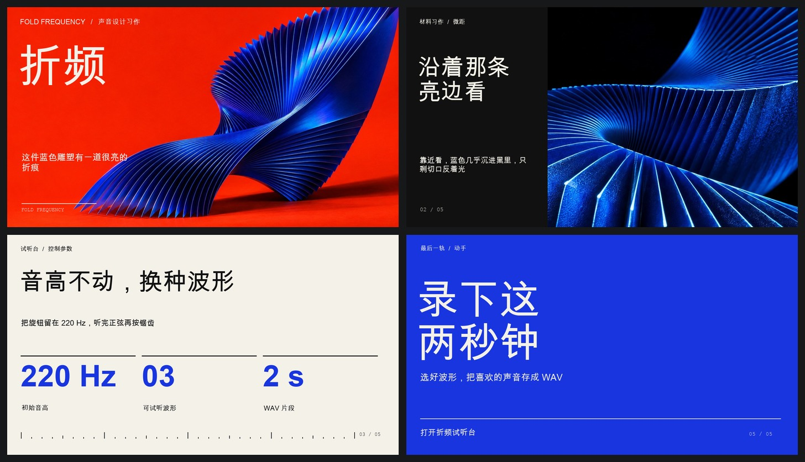
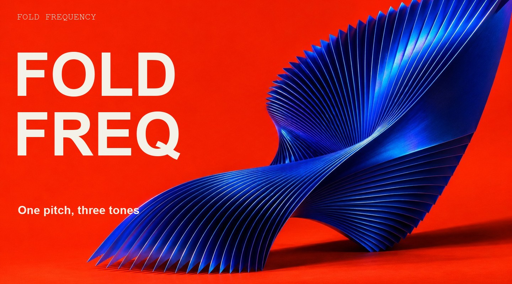
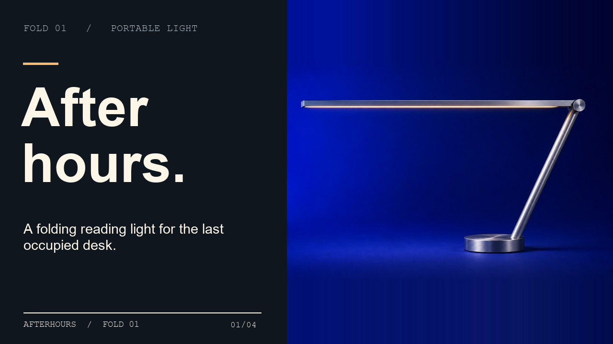
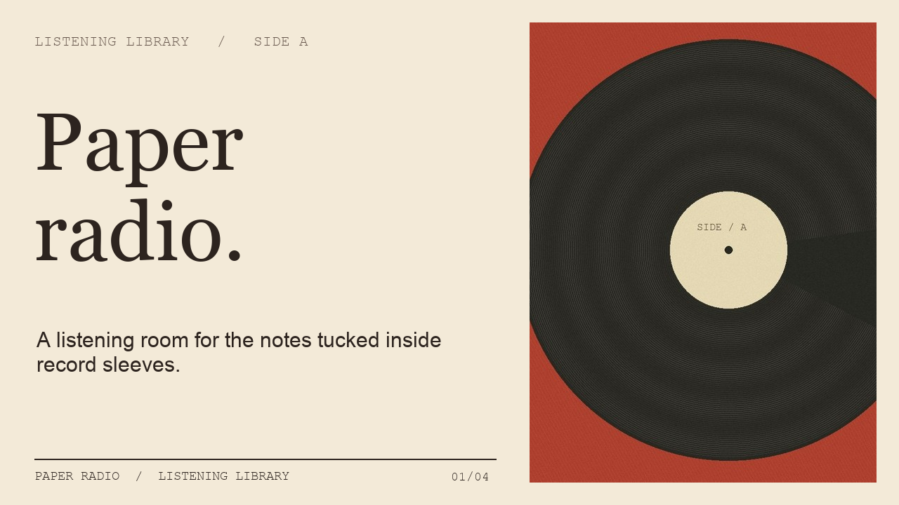
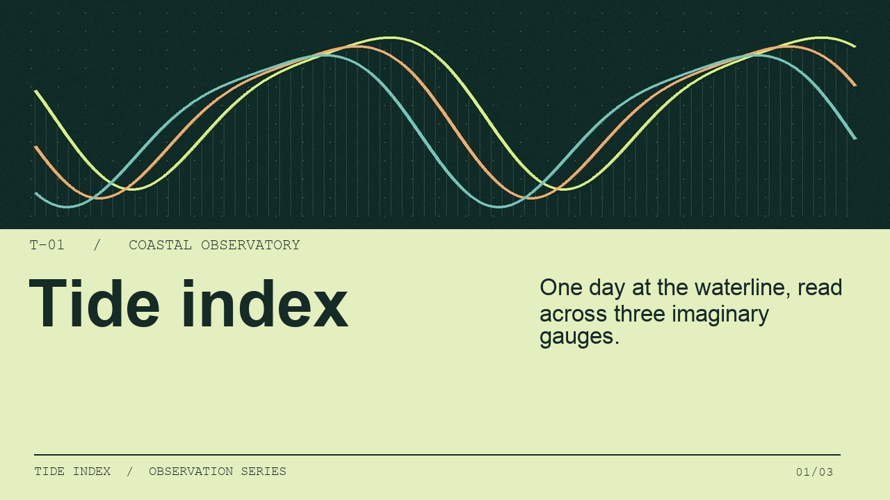
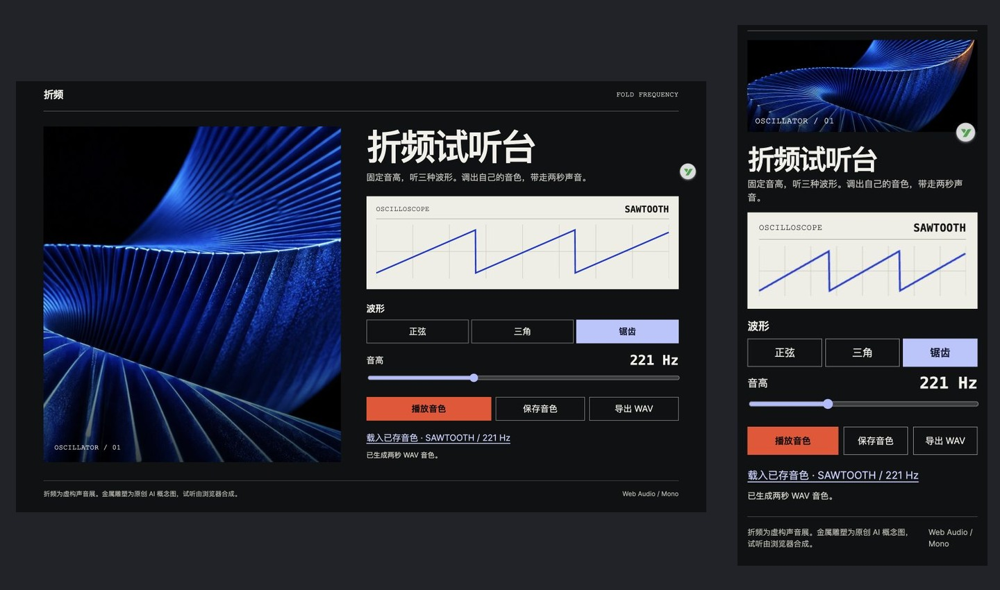
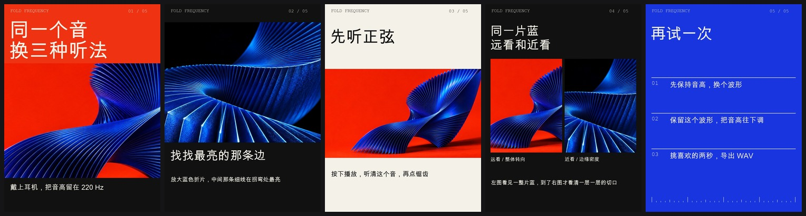
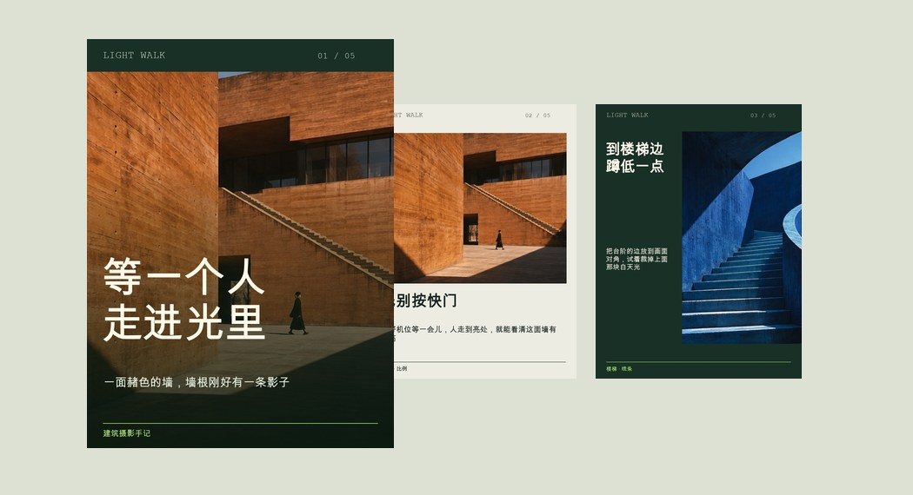

折频 / Fold Frequency
声音展览 · 5 页开场让雕塑占满银幕，第二页把视线拉到金属切边。图像、中文字、参数和讲者备注随 PPTX 交付。


开场让雕塑占满银幕，第二页把视线拉到金属切边。图像、中文字、参数和讲者备注随 PPTX 交付。

跟着一位行人读建筑尺度，再沿蓝色台阶找视线。双图对照页里，照片和图注都可独立替换。

钴蓝背景托起折叠灯臂，浅色规格页留给买家比较色温与尺寸。

用唱片封套的局部和书籍衬线构成试听邀请，讲清这场活动该怎样听。

从一条模拟潮位曲线，讲到三个测站的采样设计。数据与来源随演示交付。


按冷光或斜阳筛选练习，打开机位看构图，收藏后在「我的机位」找回。

从节目单选一场试听，挑时段、确认预约。回到「我的场次」可以改期或取消。


小红书
3 套图文 / 每套 5 张
把声音折起来。
竖版图文 · 1080 × 1440从薄片的转折讲到正弦、三角和锯齿。一张卡只留一个观察或动作，最后一张可以存下练习。

追一束下午的光
1080 × 1440前两张照片示范怎样等人入画、压低机位，滑到最后一张可以存下散步练习清单。
落针之前，读一张封套。
1080 × 1440从封套最大的色块读到唱针落下的第一轨，再给自己的听音笔记留三个问题。